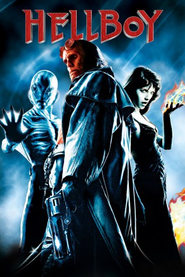
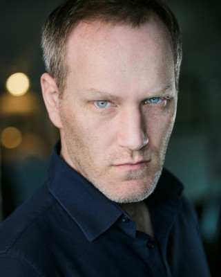
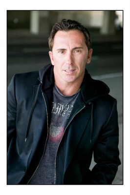

#719 Hellboy 1
 
 IMDB-Wertung: 6.9 / 10
IMDB-Wertung: 6.9 / 10  Metascore: 72
Metascore: 72 
Im zweiten Weltkrieg versuchen Nazi-Wissenschaftler auf dem Gebiet des Okkulten mit Hilfe des bösen Rasputin ein Tor zur Hölle zu öffnen und sieben Götter des Chaos zu ihren Gunsten auf die Erde loszulassen. Eine amerikanische Geheimorganisation unter der Leitung von Professor "Broom" Bruttenholm kann dies verhindern, doch durch das unfertige Tor fällt ihnen ein noch junger Dämon, genannt "Hellboy" in die Hände. Broom erzieht ihn zum Kampf gegen das Böse und in unserer Zeit hat er es sich auf der guten Seite recht gemütlich gemacht, ist sogar heimlich verliebt in die pyrokinetische Liz. Als Rasputin jedoch sich anschickt, seinen Plan zu vollenden, mobilisiert die Organisation alle Kräfte und Hellboy ist mittendrin.
Jahr: 2004
Dauer: 122 Minuten
FSK: 12
Land: USA Studio: Columbia PicturesTonspuren: DTS - ,
Untertitel:
Auflösung: 1080p (1920x1080) Größe: 11980 MB
Genre: Action, Fantasy, Horror, Sci-Fi
Regisseur:  Guillermo del Toro
Guillermo del Toro
Drehbuch: Guillermo del Toro, Guillermo del Toro, Peter Briggs, Mike Mignola
Soundtrack: Marco Beltrami
Darsteller:
 Ron Perlman als Hellboy
Ron Perlman als Hellboy John Hurt als Trevor Broom Bruttenholm
John Hurt als Trevor Broom Bruttenholm Selma Blair als Liz Sherman
Selma Blair als Liz Sherman Rupert Evans als John Myers
Rupert Evans als John Myers- Karel Roden als Grigori Rasputin
 Jeffrey Tambor als Tom Manning
Jeffrey Tambor als Tom Manning- Doug Jones als Abe Sapien
- Biddy Hodson als Ilsa Haupstein
- Corey Johnson als Agent Clay
-  Brian Caspe als Agent Lime
 James Babson als Agent Moss
James Babson als Agent Moss- Angus MacInnes als Sgt. Whitman
- Jim Howick als Cpl. Matlin
-  Charles Grisham als Museum Guard
- Monty L. Simons als Orderly
- Ellen Savaria als Blonde Television Reporter
- Winter Ave Zoli als Girlfriend
- Santiago Segura als Train Driver
 Guillermo del Toro als Guy Dressed as Dragon , uncredited
Guillermo del Toro als Guy Dressed as Dragon , uncredited- David Hyde Pierce als Abe Sapien , uncredited
- Todd Kramer als Radioman , uncredited
- Mike Mignola als Knight , uncredited
- Helene Wilson als Liz Sherman's Mother , uncredited
- Brian Steele als Sammael
- Ladislav Beran als Karl Ruprecht Kroenen
- Kevin Trainor als Young Broom
- Stephen Fisher als Agent Quarry
- Garth Cooper als Agent Stone
- Mark Taylor als Truck Driver
- Daniel Aarsman als Kid
- Bettina Ask als Kid
- Alvaro Navarro als Kid
- Emilio Navarro als Kid
- Rory Copus als Kid on Rooftop
- Tara Hugo als Doctor Jenkins
- Richard Haas als Second Doctor
- Andrea Miltner als Doctor Marsh
- Jo Eastwood als Down's Patient
- Jan Holicek als Museum Guard
- Jeremy Zimmermann als Lobby Guard
- Pavel Cajzl als Sherpa Guide
- Andrea Stuart als Girl with Kittens
- William Hoyland als Von Krupt
- Millie Wilkie als Young Liz
- Bob Sherman als Television Host
- Petr Sekanina als German Scientist
- Ales Kosnar als German Scientist
- Justin Svoboda als Young Guy
- Albert Moy als Train Driver
- Dennison Betram als Cab Driver , uncredited
Datei: X:\Comic-Filme\Hellboy\Hellboy 1 (2004, FSK12, 1920x1080).mkv seit 16.03.2015
Festplatte: Comicverfilmungen+MusikCD
 Alle Filme aus Gruppe 'Comic-Filme\Hellboy'
Alle Filme aus Gruppe 'Comic-Filme\Hellboy'